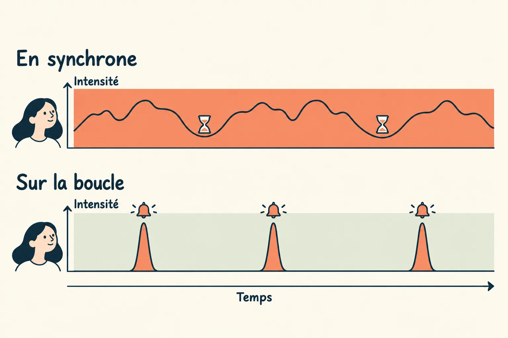

L'humain sur la boucle
Un client en cours d'installation reçoit un email lui annonçant que ses identifiants sont refusés et son intégration suspendue. C'est faux, et 63 minutes après qu'un humain a tranché, le correctif est en production. Ce module décrit les boucles qui le permettent, et la place qu'y garde l'humain : sur la boucle, pas dedans. Il n'attend plus devant un chat, il est sollicité quand un événement le demande. Un agent ne s'arrête pas quand il a écrit du code, il s'arrête quand un état vérifiable est atteint, et chaque boucle a un signal d'entrée, un critère d'arrêt et un garde-fou.
Au départ : un email qui n'aurait pas dû partir
On installe un nouveau client. Pendant le paramétrage, un agent tente de se connecter à son logiciel de gestion en parallèle de l'équipe, échoue, et le système fait ce qu'on lui a appris : il suspend l'intégration et envoie au client un email « vos identifiants sont refusés ». Le client n'a rien fait de travers, on a bien ses accès. Un premier contact avec Wavo qui commence par une alarme, c'est le genre de bug qui coûte de la confiance.
14 octobre. 12h50, l'alerte tombe dans le canal des ops. 13h26, le chargé d'onboarding la commente dans le fil : l'email est utile pour un client en production, trop tôt pour un client qu'on installe. 13h48, il ajoute un doute : des rachats de test qu'il avait passés le matin ont été annulés, peut-être par l'agent.
14h43, un dev tague @Odette job-story dans le fil. Odette, notre outil de pilotage interne, crée la tâche, la range sous la feature de surveillance des workflows, et un agent l'implémente. 15h46, Odette repasse dans le fil : déployé en production. Soit 2h20 après le signalement, dont 1h17 à attendre qu'un humain s'en saisisse, et 63 minutes de la décision à la production.
Le lendemain, dans le même fil, le dev sépare les 2 sujets : les rachats annulés ne venaient pas de l'agent mais d'une étape de l'assistant d'installation, qui devient une tâche à part. Et quand on lui propose de couper tous les emails en attendant mieux, il garde celui qui sert aux clients en production.
Pour un bug, même geste avec @Odette bug-fix, et -auto pour que l'agent aille seul jusqu'à la PR.
Ce qui est parti en production n'est pas un correctif technique, c'est une règle produit : pendant l'installation, un premier échec ne suspend plus rien et ne prévient plus le client, il crée une tâche pour l'équipe. L'agent a écrit le code. L'humain a décidé quand un client mérite d'être alerté, et a démêlé 2 causes que le fil avait confondues.
Et le chrono le dit sans détour : la partie la plus longue n'a pas été le travail de l'agent, mais l'attente d'un humain disponible. C'est le sujet de ce module.
La demande naît là où on en parle déjà, et tout y revient. Pas de formulaire ni d'outil de tickets à ouvrir. Le message devient la tâche, et celui qui l'a posté voit passer le plan, la PR et la mise en production sans avoir à demander où ça en est.
- Chacun tranche ce qu'il connaît. Le comportement attendu et la priorité reviennent au demandeur, les choix techniques à l'équipe tech, dans le même fil.
- Le fil fait foi. Il garde l'historique de la décision, lisible par un collègue absent comme par un agent.

Sur la boucle, pas dedans
À force de parler de « boucles d'agents », on oublie l'humain, qui n'a pas disparu : il a changé de place. Les chercheurs en systèmes autonomes distinguent 3 positions :
| Position | Ce que fait l'humain | Pour quoi |
|---|---|---|
| Dans la boucle | Il valide chaque étape avant que l'agent continue. | L'irréversible : une écriture en production, une suppression, un secret. |
| Sur la boucle | Il fixe l'objectif et le critère d'arrêt, laisse tourner, est prévenu aux moments qui comptent, et peut reprendre la main à tout moment. | Le cas par défaut, et le sujet de ce module. |
| Hors de la boucle | Il n'intervient plus. | Ce qui est sûr, réversible, et vérifié par une machine. |
Cette place n'est plus réservée aux développeurs. Les équipes ops et business, longtemps loin du code, sont maintenant sur la boucle elles aussi. Quand une règle métier est à trancher, l'agent vient les chercher là où elles travaillent, et leur arbitrage part en production sans passer par un ticket. Dans l'exemple de l'email, c'est le chargé d'onboarding qui a dit quand un client mérite d'être prévenu.
Dans la boucle, l'humain devient le goulot : l'agent attend à chaque pas, et l'attention s'use à valider ce qui n'en avait pas besoin. Sur la boucle, il garde la main sur l'intention et sur les décisions, et laisse l'exécution à l'agent. On retrouve la place décrite au début du parcours (module 1) : l'humain cadre, tranche et relit, et l'IA le prolonge sans le remplacer.
Sur la boucle par défaut : la demande porte son objectif, l'agent va jusqu'à la PR, un humain la relit et la merge. Dans la boucle pour la production : aucune commande qui écrit en prod n'est lancée par un agent, elle est remise telle quelle à l'humain, qui la lance lui-même.
Du chat à l'événement
La place de l'humain a changé en 4 étapes. Chacune règle un problème de la précédente, et en crée un nouveau.
1. Une conversation à la fois
Nos premiers pas avec l'IA ressemblaient à un chat. On écrit une consigne, on attend la réponse, on relit, on relance. Les réponses arrivent en quelques minutes, donc on reste devant l'écran. L'humain est synchrone, il attend chaque réponse, et séquentiel, une demande après l'autre.

2. Des sessions plus longues, en parallèle
Puis les modèles ont su mener des tâches plus complexes : écrire une PR entière, mener un diagnostic, rédiger un plan. Une session dure désormais des dizaines de minutes, parfois des heures. Rester à la regarder n'a plus de sens, alors on en lance plusieurs, côte à côte.
Le problème change de nature. Chaque session envoie ses notifications : elle a fini, elle pose une question, elle est bloquée. L'humain passe de l'une à l'autre, et chaque bascule lui demande de recharger le contexte d'un sujet différent. Ce changement de contexte permanent fatigue et embrouille : on finit par ne plus savoir quelle session attend quoi.

3. L'humain fait le relais
Et le travail ne naît pas dans le chat. Il arrive d'ailleurs : un email de client, une alerte de production, la réaction d'un collègue sur une fonctionnalité. Pour qu'une session s'en occupe, l'humain doit lire l'information, la copier, ouvrir une session et la coller avec le contexte qui va bien.
C'est là que l'humain devient le maillon critique. Tout passe par lui, et s'il est en réunion ou concentré sur autre chose, rien ne démarre. Son temps part dans le copier-coller plutôt que dans les décisions.

4. Les événements branchés sur les sessions
L'étape suivante consiste à retirer l'humain du chemin, sans le retirer de la boucle. On branche directement les événements sur les sessions : l'alerte lance elle-même le diagnostic, le message dans un fil devient une tâche qu'un agent prend en charge. La session travaille seule, et ne vient chercher l'humain qu'aux moments où il est irremplaçable : prendre connaissance des enjeux, trancher, relire.

C'est ce que veut dire « sur la boucle » : l'humain ne pousse plus le travail, il est appelé quand sa décision compte. Voici les 3 déclencheurs qu'on a branchés.
| Déclencheur | Exemple | Quand l'humain intervient |
|---|---|---|
| Un message | Un collègue signale un bug ou demande une fonctionnalité dans un fil. | Pour trancher le comportement attendu, puis pour merger. |
| Une panne | Un job de données casse en production. | Pour merger le correctif, puis rejouer ce qui a échoué. |
| Un horaire | Chaque lundi, une session relit les détections de sécurité de la semaine. | Pour arbitrer ce qui touche aux accès et au trafic des clients. |
Le changement se lit sur le temps de cerveau de l'humain. En synchrone, il est mobilisé du début à la fin de la session, avec une intensité variable : haute quand il relit ou relance, basse quand il attend la réponse. Mais même en attendant, il reste devant l'écran, il ne peut ni passer à autre chose ni vraiment souffler. Sur la boucle, il n'est sollicité que par moments courts, et chaque fois à haute intensité : il prend connaissance du diagnostic, tranche, relit la PR. Entre deux sollicitations, son attention lui appartient.

Ce changement ne rend pas l'humain moins utile. Il protège son attention, qui est la ressource rare (module 1) : moins de temps à attendre, plus de temps sur les décisions qui lui reviennent. La contrepartie, c'est que chaque sollicitation doit arriver avec tout ce qu'il faut pour décider vite : le diagnostic, la PR, la commande prête à lancer.
Quatre boucles, quatre échelles de temps
- Le toursecondes · l'agent a-t-il le droit de rendre la main ?
- La PRminutes · CI, revue, corrections, jusqu'au feu vert et au déploiement.
- L'alerteminutes à heures · une panne devient une tâche et une PR draft, sans humain pour démarrer.
- La méta-bouclesemaines · ce qui frotte devient une règle, un garde-fou ou une procédure, puis on mesure.
Le tour : un objectif écrit, vérifié par un tiers
C'est sans doute l'idée la plus facile à reprendre ailleurs : toute demande qui lance une session autonome porte un critère d'arrêt formulé comme un état observable, pas comme une action : « la PR existe et est liée à la tâche », plutôt que « ouvre une PR ».
- Un contrôle déterministe à chaque tentative d'arrêt : s'il reste du travail non commité ou non poussé, l'agent repart. Indispensable dès que l'agent tourne sur une machine jetable.
- Un contrôle par un second modèle, qui lit le critère et va vérifier l'état réel (le dépôt, la forge, le ticket) au lieu de croire le récit de la session. Il laisse partir si l'objectif est atteint, si une autre session le couvre déjà, ou si on attend un humain.
- Une soupape : un plafond de relances consécutives, pour qu'un critère mal écrit ne fasse pas tourner la session indéfiniment.
Ce qui change par rapport à un simple « continue jusqu'à ce que ce soit fini » : celui qui demande écrit le critère, et c'est un tiers qui le juge en regardant l'état réel, pas le modèle qui s'évalue lui-même.
La demande se termine par une ligne Goal:. 2 hooks Stop de Claude Code s'exécutent quand Claude veut rendre la main : un script shell qui bloque s'il reste des changements non poussés, puis un hook de type agent qui juge la ligne Goal: en interrogeant GitHub avec gh.
Goal: the task of the root cause of this failure and its draft PR
are open and linked in this thread.Un second avis avant d'agir et avant de rendre
Le tiers peut aussi intervenir pendant la session. Un modèle plus fort, qui voit toute la conversation, est consulté à 2 moments : avant de s'engager sur une interprétation, et avant de déclarer la tâche finie. Il rattrape ainsi une mauvaise lecture de la demande avant que du code soit écrit dessus, et relit le livrable avant qu'il revienne à l'humain.
- Celui qui travaille et celui qui conseille sont deux modèles distincts. Le second coûte plus cher par appel, mais il est appelé rarement.
- Réservé aux tâches longues. Sur une tâche courte, l'appel de plus et la latence ne rapportent presque rien. Les autres niveaux d'agents ont leur propre module.
Un réglage de Claude Code, advisorModel : Opus fait le travail, Fable conseille. C'est le modèle qui décide quand le consulter ; en pratique, il le fait dès qu'un sujet est à trancher, et systématiquement quand on planifie une tâche moyenne ou complexe.
L'alerte : de la panne à la PR draft
Quand un job casse en production, l'alerte elle-même lance une session, avec la tâche et son critère d'arrêt. La session diagnostique, rattache la panne à une cause racine, corrige et ouvre une PR draft. Un humain relit et merge.

- Une cause, une tâche, une PR. Une même panne déclenche souvent plusieurs alertes à quelques secondes d'écart. Sans verrou partagé sur la décision « je crée ou je rejoins », on obtient plusieurs PR concurrentes.
- Un disjoncteur. Après quelques échecs de démarrage d'affilée, on arrête de lancer des sessions pour cette alerte : une permission manquante ne doit pas déclencher une tempête.
- La boucle autonome a sa propre surveillance. Le composant qui lance les sessions publie sa santé et déclenche une alarme s'il se tait.
- La main passe dans les 2 sens. Quand une alerte demande du jugement, l'humain rouvre en local la session de la machine jetable, sur la branche où elle travaillait, sans en copier le transcript. Dans l'autre sens, une session locale qui a cadré et planifié confie l'implémentation à une machine jetable avec une note de passation : l'objectif, les décisions, ce qui est fait et ce qui reste. L'humain la relit avant l'envoi.
Un cas limite, 35 minutes de bout en bout
Un job qui publie les données d'un client vers l'application tombe en échec. La cause est un cas limite qu'aucun test n'avait prévu : 2 demandes identiques, envoyées à quelques secondes d'écart, ont voulu remplacer les mêmes lignes en même temps, et la base a refusé la seconde. Rien n'était perdu, mais rien ne la rejouait non plus.

L'humain n'a rien démarré. Il a été appelé 2 fois, et les 2 fois pour ce qui touche la production : merger le correctif, puis rejouer l'exécution en échec. Entre les deux, l'agent a suivi le déploiement et confirmé que le rejeu pouvait partir.
Il a aussi dit ce qu'il n'avait pas fait. Pourquoi la même demande est partie 2 fois reste une question ouverte, notée hors du périmètre de la tâche. Un agent qui rend la main avec ses angles morts écrits, c'est un humain qui sait où regarder ensuite.
Le message d'alerte se termine par la ligne Goal: décrite plus haut : la tâche de la cause racine et sa PR draft doivent être ouvertes et liées dans le fil. La commande de rejeu en production est postée dans le fil, prête à copier ; c'est l'humain qui la lance.
Les alertes Slack de la data platform mentionnent @Claude (Claude Tag). Un orchestrateur auto-hébergé, sur ECS, crée une MicroVM par session sur le compte AWS de dev. Un verrou DynamoDB sérialise « je crée ou je rejoins », et la création de PR est refusée si une autre PR du bot des 48 dernières heures touche les mêmes fichiers. D'autres portes d'entrée existent : une issue GitHub qui devient une PR, ou une tâche de notre outil de pilotage dont le plan est implémenté en CI.
La reprise passe par resume-session, qui ouvre un workspace Superset à partir d'un lien de session, et la passation par handoff-session, ou par un appel au MCP de l'outil de pilotage depuis la tâche. Une petite table du compte de dev retient la branche de chaque session : c'est la seule information que la reprise ne retrouve pas d'elle-même.
Le fil rouge : la sécurité
Toutes les boucles ne partent pas d'une panne. Certains sujets ne cassent jamais d'un coup : ils s'usent. La sécurité en est l'exemple type. Personne ne lève la main pour dire qu'un port est resté ouvert sur internet, et c'est justement le problème.
On l'a traitée comme un fil rouge plutôt que comme un projet. Un audit mené avec l'IA a passé en revue le code, les dépendances, l'historique du dépôt et la configuration du cloud. Il n'a pas produit un rapport à lire, mais des tâches, rangées dans une même feature et reprises une à une en PR. Puis 2 boucles prennent le relais pour que ça ne se dégrade pas :
- À chaque PR, des analyses de sécurité tournent dans la CI et bloquent le merge si elles trouvent quelque chose.
- Chaque semaine, une session planifiée relit les détections de tous les comptes cloud et publie un compte rendu. Ce qui demande une correction rejoint la feature, et redevient une tâche puis une PR.
L'humain n'y fait pas le tri ligne à ligne. Il intervient là où une machine ne peut pas juger seule : quand une règle risque de bloquer un vrai client. Pour le pare-feu de l'application, l'équipe a d'abord laissé les règles en observation, vérifié qu'elles ne bloquaient rien de légitime, puis seulement les a rendues bloquantes, en demandant à tous de signaler la moindre action impossible.
L'audit a produit 35 tâches dans une feature dédiée de notre outil de pilotage. Une vingtaine sont en production, le reste est planifié. La routine du lundi lit les détections de sécurité AWS ; les PR de la data platform sont bloquées par des scanners de code, de dépendances, d'images et de secrets.
La PR : réagir aux événements, pas à l'horloge
Une fois la PR ouverte, une procédure unique la suit : lire les checks, lire la revue, trier, corriger, repousser, passer en ready, puis suivre le merge et le déploiement qui en découle. Elle réagit à chaque check terminé ou nouveau commentaire. Un réveil programmé ne sert que de filet de secours : à intervalle fixe, on arrive toujours trop tôt ou trop tard.
Un seul chemin pour ouvrir une PR. Les sessions n'ont pas le droit de passer à côté de la procédure, et c'est ce qui rend leur comportement prévisible.
Le skill github-pr, lancé dans /loop avec un Monitor qui émet une ligne par événement GitHub.
À reprendre
- Placez l'humain sur la boucle par défaut, dans la boucle pour l'irréversible.
- Laissez les événements lancer le travail, et faites venir l'humain avec tout ce qu'il faut pour décider vite.
- Traitez les sujets qui s'usent, comme la sécurité, en fil rouge : un contrôle à chaque PR, une relecture planifiée, des tâches plutôt qu'un rapport.
- Écrivez le critère d'arrêt dans la demande, comme un état observable.
- Faites-le juger par un tiers qui regarde l'état réel, pas le transcript.
- Sur les tâches longues, faites relire l'interprétation et le livrable par un modèle plus fort.
- Une cause, une tâche, une PR : un verrou avant de créer.
- Surveillez la boucle autonome elle-même.
- Suivez les PR à l'événement.
- Ouvrez les demandes là où les utilisateurs parlent déjà, et laissez-les arbitrer le produit dans le fil.